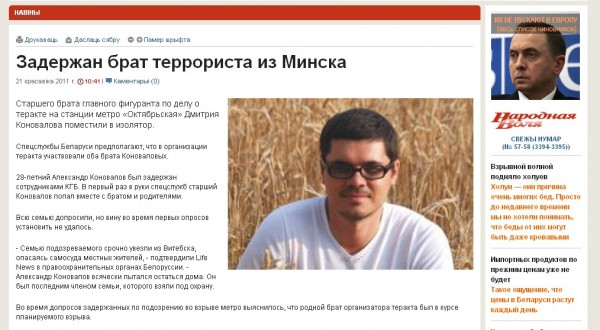

В Минском метро произошел взрыв. Несчастье, опасность, некоторым людям горе. Журналистам новостной повод.
Виновные будут найдены конечно, справедливость восторжествует. Но пока необходимо освещать. И освещают.
Белорусская газета «Народная воля» (На всё воля народна…) сегодня опубликовала материал. Задержан брат террориста из Минска.

Материал как материал, но к нему фото. На фото мужчина в очках. Из текста правда не ясно Александр это Коновалов, или его брат — Дмитрий. Читателям не ясно, а мне сидящему в далёкой Сибири наоборот.
На фотографии Дмитрий Коновалов. Почему я так уверен? Да потому, что человек на фотографии живёт в Москве, и некоторое время работал в Кемерово, в «Кузбасской мебельной компании» топ-менеджером-варягом. Теперь видимо вылез в поиске.
Не читайте вы с утра этих белорусских газет. Русских тоже не читайте впрочем.
Тут третий пошел - да не гоните фуфло! Качки и рэппера - ваше время ушло. Интернет - вот сила! Дай-ка наберу. Читай: www.***.ru Я сижу на заду и просто юзаю мышь. Я могу подглядеть как ты ночью храпишь. Со мной в покер играет сам Ельцин Борис! И я имею всех подряд - от Шер до Бритни Спирс. Время придет - я поимею и вас. Хочешь завтра в новостях скажут: "Коля п***с!" Я навешу судимость за фальшивый лаве, И оформлю на себя твой сраный БМВ. И тебе, рэп-звезда, я устрою кошмар, Я тебя поженю на старухе из ЮАР. Двенадцать дочерей. Ей скоро рожать, И все бегают, орут - папа, мы хотим пожрать! Берегись, чувак! Если что-то не так, Ты узнаешь как у хакеров варит чердак. Я ночью от скуки пороюсь в ноутбуке, И завтра ты никто. Спорим на кабак?
Дискотека Авария «ЧП»